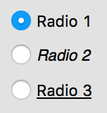
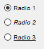
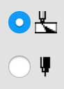
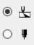
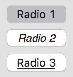
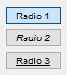
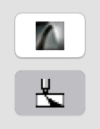
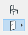

Radio Button
A radio button is a two-state interactive dialog item. There are two basic kinds of radio buttons: simple and button-like. Radio buttons are used to select one option from a set. When an option is selected, a dot mark appears in the circle or the button appears pushed according to the radio button subtype.
Radio buttons belonging to the same set of options are called a "radio button group". Selecting one button in a set deselects the previously selected button, so one and only one of the options in the set can be selected at any given time. In contrast, check boxes are used when more than one option in the set can be selected at the same time.
In DG there is another special kind of radio button, the so called push menu control (DG_BT_PUSHMENUICON subtype). The push menu control is a radio button combined with a pop-up menu of icon buttons. In addition to the standard button-like radio button's behavior, this control has some special functionality. This is why it has a set of handling functions in DG. For details see push menu control and push menu specific functions.
Item type
- DG_ITM_RADIOBUTTON
Subtypes
-
Value Meaning DG_BT_TEXT Simple text radio button.
 
DG_BT_ICON Simple icon radio button.
 
DG_BT_PUSHTEXT Button-like text radio button.
 
DG_BT_PUSHICON Button-like icon radio button.
 
GRC Specification
RadioButton x y dx dy fontSpec groupID "text"
PushRadio x y dx dy fontSpec groupID "text"
IconRadioButton x y dx dy groupID iconID
IconPushRadio x y dx dy groupID iconID
where x and y are the pixel coordinates of the upper left corner of the radio button, dx and dy are the width and height of the control in pixels. groupID defines the 1-based index of a group of radio buttons to which the control belongs. fontSpec declares the font size and style of the radio button text. iconID defines the icon resource ID of the icon-style radio button.
Possible values of fontSpec:
-
Value DG constant combination used in DGSetItemFont ExtraSmall DG_IS_EXTRASMALL SmallPlain DG_IS_SMALL | DG_IS_PLAIN SmallBold DG_IS_SMALL | DG_IS_BOLD SmallItalic DG_IS_SMALL | DG_IS_ITALIC SmallUnderline DG_IS_SMALL | DG_IS_UNDERLINE LargePlain DG_IS_LARGE | DG_IS_PLAIN LargeBold DG_IS_LARGE | DG_IS_BOLD LargeItalic DG_IS_LARGE | DG_IS_ITALIC LargeUnderline DG_IS_LARGE | DG_IS_UNDERLINE
Suggested sizes
For text-style radio buttons the following item heights are suggested. It is advised to use these values in GRC or when radio buttons are created from program code.
-
Subtype dy (pixels) DG_BT_TEXT 18 DG_BT_PUSHTEXT 20
Messages
-
Message Meaning DG_MSG_CHANGE The radio button is checked (switched on). The message data parameter contains the 1-based index of the previously selected radio button in the same group. DG_MSG_DOUBLECLICK The radio button is double clicked. The message data parameter is always zero. The dialog callback function receives this message for button-like radio buttons (DG_BT_PUSHTEXT, DG_BT_PUSHICON) only.
Modification Flag
The DGSelectRadio or DGSetItemValLong function sets the radio button's modification flag except if it is called when handling the DG_MSG_INIT message in the dialog callback function. The flag can also be set by user actions that generate DG_MSG_CHANGE messages. Use DGModified or DGResetModified to retrieve or reset (clear) the state of the modification flag.
Remarks
There are two states of a radio button: checked (pressed) and unchecked (released). In DG these states are represented by the item values of the radio button. Item value of 1 means the checked, while zero the unchecked state. To set and retrieve the state of a radio button call DGSelectRadio or DGSetItemValLong and DGGetItemValLong. Note that DGSetItemValLong cannot be used to uncheck a radio button. Check another radio button in the same group instead.
A radio button can be grouped with other radio buttons of the same dialog or tab page. The grouping information can be specified in the GRC only. When switching on a radio button of a group (either by user action or from program code), DG automatically switches off the other radio buttons of the group. If a radio button in a group is switched on by user action, the dialog callback function is called with DG_MSG_CHANGE only for the radio button pressed. However, the modification flag of all the radio buttons in the group are set (DGModified will return 1). Use DGGetCheckedRadio to retrieve the 1-based index of the checked radio button in a group.
The text of a text-style radio button (DG_BT_TEXT, DG_BT_PUSHTEXT) can be set, modified and retrieved by DGSetItemText, DGCatItemText and DGGetItemText, respectively. The text can be displayed with any type of DG fonts. The font can be specified not only in GRC, but by the DGSetItemFont function as well. Use DGGetItemFont to retrieve the font currently assigned to a radio button.
The icon of an icon-style radio button (DG_BT_ICON, DG_BT_PUSHICON) can be assigned either by the resource ID or by the handle of the icon. To set and retrieve the icon of a radio button use DGSetItemImageId or DGSetItemImage and DGGetItemImageId or DGGetItemImage, respectively. Note that icon resource ID can be defined in GRC, too.
Requirements
- Version: DG 2.2.0 or later
- Header: DG.h
See Also
Dialog item types, Push Menu Control, Check Box
Push menu specific functions, DGCatItemText, DGGetCheckedRadio, DGGetItemFont, DGGetItemImage, DGGetItemImageId, DGGetItemText, DGGetItemValLong, DGModified, DGResetModified, DGSetItemFont, DGSetItemImage, DGSetItemImageId, DGSetItemText, DGSetItemValLong, Callback functions
DG_MSG_CHANGE, DG_MSG_DOUBLECLICK, DG_MSG_INIT